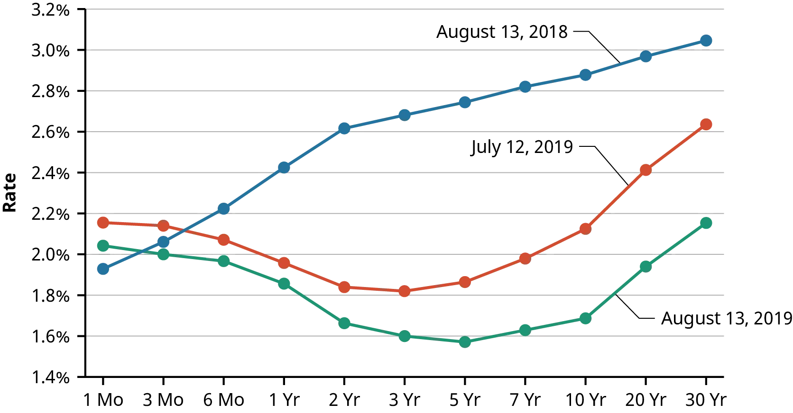

4 Dluhopisy a jejich oceňování
- Dahlquist, J. R., &; Knight, R. (2022). Principles of finance. OpenStax, Rice University. https://openstax.org/details/books/principles-finance
- Chapter 10 - Bonds and Bond Valuation
Výstupy z učení:
- Porozumět základním charakteristikám dluhopisů a různým typům dluhopisů.
- Rozpoznat, jaký je vztah mezi cenou dluhopisu a jeho výnosem.
- Naučit se vypočítat hodnotu dluhopisu a rozlišovat mezi dluhopisy s diskontem a kupónovými dluhopisy.
- Porozumět konceptům dluhopisů s pevnou a variabilní úrokovou sazbou.
- Naučit se, jak funguje výnosová křivka a jaký je její význam.
- Porozumět běžným rizikům dluhopisů.
4.1 Charakteristika dluhopisů
4.1.1 Dluhopisy jako investice
- Dluhopis je kontrakt mezi věřitelem (investorem) a dlužníkem (emitentem dluhopisu).
- Investor, který kupuje dluhopis, půjčuje peníze emitentovi, jako je například nějaká firma nebo vláda.
- Emitenti dluhopisů využívají tyto nástroje jako externí zdroj financování své činnosti.
- Emitent slibuje vrátit původní půjčku a úroky (kupónové platby) ke konkrétnímu datu splatnosti.
- Kupónové platby kompenzují investora s ohledem na časovou hodnotu peněz.
- Dluhopisy patří mezi záladní investiční nástroje pro diversifikaci portfolia.
- Investoři, kteří kupují dluhopisy, v podstatě kupují slíbený budoucí tok hotovosti od emitenta dluhopisu.
- Držitel dluhopisu má přednostní právo na majetek společnosti a její cash flow (oproti vlastníkům / akcionřům), ale nemá hlasovací právo.
4.1.2 Základní terminologie
- Jmenovitá hodnota (jistina, par value, face value): Je hlavní částka, kterou je věřitel povinen splatit při splatnosti dluhopisu.
- Úroková (kupónová) sazba: Úroková sazba použitá k výpočtu pravidelných kupónových plateb dluhopisu, vyjádřena jako roční sazba.
- Kupónová platba: Pravidelná platka, kterou dostává věřitel od dlužníka.
- Datum splatnosti: Datum expirace dluhopisu, kdy emitent zaplatí poslední úrokovou platbu a splatí jemnovitou hodnotu.
- Výnos do splatnosti (YTM): Diskontní sazba použitá k výpočtu současné hodnoty budoucích peněžních toků dluhopisu, reprezentující návratnost, pokud je dluhopis držen do splatnosti.
- YTM indikuje celkovou investiční hodnotu dluhopisu.
- Možnost předčasného splacení (callable feature): Udává, zda dluhopis může být ukončen nebo splacen před normálním datem splatnosti.
- Rating: Hodnocení, které indikuje kreditní riziko dlužníka.
4.1.3 Typy Dluhopisů
- Státní dluhopisy:
- Státní dluhopisy jsou obecně považovány za bezpečnou investici (převážně u rozvinutých států).
- Stát, který má vlastní měnu bude vždy schopen dluhopis splatit.
- Možnost zvyšovat daně na financování splátek dluhopisů.
- Nabízejí většinou jen nízké výnosy.
- Korporátní dluhopisy:
- Vydávány firmami a nesou vyšší riziko než státní dluhopisy.
- Riziko a návratnost závisí na bonitě společnosti.
- Korporátní dluhopisy s vysokým výnosem, ale také velkým rizikem se nazývají “junk bonds” nebo “high yield bonds”.
- Další vlastnosti dluhopisů:
- Convertible bond možnost převodu dluhopisu na akcie v předem daném poměru.
- Callable bond dlužník může dluhopis předčasně splatit.
- Putable bond věřitel může vyžadovat předčasné splacení.
- Zero-coupon bond (diskontovaný dluhopis) nevyplácí kupón, ale investor ho kupuje se slevou.
- Inflation protected securities dluhopisy zajištěné proti inflaci.
- Eurodollar bonds dluhopisy denominované v dolarech prodávané mimo USA.
4.1.4 Vliv úrokových sazeb
- Investice do dluhopisu má dvě strany: platbu jmenovité hodnoty při splatnosti a pravidelné kupónové platby.
- Oceňování dluhopisů zahrnuje samostatné výpočty současné hodnoty pro tyto dva typy příjmů.
- Cena dluhopisu a úroková sazba mají inverzní vztah.
- Když úrokové sazby klesají, ceny dluhopisů stoupají a naopak.
- Výjimkou jsou dluhopisy s plovoucí úrokovou sazbou, která se přizpůsobuje ekonomickým změnám.

- Investoři do dluhopisů s pevnou úrokovou sazbou mohou vidět ztrátu hodnoty svých investic, pokud úrokové sazby vzrostou.
- Diskontované dluhopisy jsou citlivější na změny úrokových sazeb než kupónové dluhopisy.
4.2 Oceňování Dluhopisů
4.2.1 Obecný postup
- Určení peněžních toků: Identifikujte pravidelné kupónové platby a nominální hodnotu dluhopisu, která bude vrácena při splatnosti.
- Diskontování peněžních toků: Každý budoucí peněžní tok je diskontován na jeho současnou hodnotu.
- Součet současných hodnot: Sečtěte všechny současné hodnoty k získání ceny dluhopisu.
\[ \text{price} = \frac{CF_1}{(1+r)^1} + \frac{CF_2}{(1+r)^2} + \frac{CF_3}{(1+r)^3} + \dots + \frac{CF_n}{(1+r)^n} \]
\[ \text{price} = \sum^n_{t=1} \frac{CF_t}{(1+r)^t} \]
- \(r\) … diskontní sazba (nominální), neboli výnos požadovaný investorem (YTM)
- \(CF\) … očekávané budoucí cash flow
- Očekávaná cash flow jsou výplaty kupónů a s posledním kupónem i vrácení jistiny.
4.2.2 Příklad očeňování dluhopisu
Dluhopis s jistinou 100 a splatností 3 roky na konci každého roku vyplácí úrok 5%. Investor požaduje výnos 5% (diskontní sazba). Kolik bude ochoten za dluhopis zaplatit (současná hodnota dluhopisu)? \[ \text{price} = \frac{5}{(1+0.05)^1} + \frac{5}{(1+0.05)^2} + \frac{105}{(1+0.05)^3} = 100 \]
Na trhu se zvýšily úrokové sazby a investor nyní požaduje z daného dluhopisu výnos 7%. Kolik bude ochoten za dluhopis zaplatit? \[ \text{price} = \frac{5}{(1+0.07)^1} + \frac{5}{(1+0.07)^2} + \frac{105}{(1+0.07)^3} = 94.75 \]
Centrální banka snížila úrokové sazby. Na trhu je méně atraktivních příležitostí. Investor je ochoten spokojit se s výnosem 3%. Kolik bude ochoten za dluhopis zaplatit? \[ \text{price} = \frac{5}{(1+0.03)^1} + \frac{5}{(1+0.03)^2} + \frac{105}{(1+0.03)^3} = 105,66 \]
4.2.3 Využití anuity
- S využitím vzorce pro výpočet anuity lze zapsat výše zmíněný postup následujícím vzorcem pro výpočet současné hodnoty (PV) dluhopisu:
\[ PV = C \times \frac{1 - (1 + r)^{-n}}{r} + FV \times (1 + r)^{-n} \]
- kde:
- \(PV\) je současná hodnota nebo cena dluhopisu
- \(C\) je roční kupónová platba
- \(r\) je požadovaná úřoková sazba (YTM, yield to maturity) nebo diskontní sazba
- \(n\) je počet období do splatnosti
- \(FV\) je nominální hodnota dluhopisu
4.2.4 Numerický příklad
- Předpokládejme následující dluhopis:
- Roční kupónová platba \(C = \$100\)
- Diskontní sazba \(r = 5\%\) nebo \(0.05\)
- Počet období do splatnosti \(n = 10\) let
- Nominální hodnota dluhopisu \(FV = \$1000\)
\[ PV = 100 \times \frac{1 - (1 + 0.05)^{-10}}{0.05} + 1000 \times (1 + 0.05)^{-10} \]
- Současná hodnota kupónových plateb: \[ 100 \times \frac{1 - (1 + 0.05)^{-10}}{0.05} = \$772.17 \]
- Současná hodnota jistiny: \[ 1000 \times (1 + 0.05)^{-10} = \$613.91 \]
- Celková hodnota dluhopisu: \[ PV = \$772.17 + \$613.91 = \$1386.08 \]
4.2.5 Různá frekvence kupónových plateb
- Předpokládejme následující dluhopis:
- Měsíční kupónová platba \(C = \$10\) (Celkem \(\$120\) za rok)
- Diskontní sazba \(r = 6\%\) nebo \(0.06\), musí být převedena na měsíční frekvency, \(r_{monthly} = 0.06/12 = 0.005\)
- Počt období do splatnosti \(n = 5\) let, ale protože jsou platby měsíční bude počet úrokových bodobí \(n_{monthly} = 5 \times 12 = 60\)
\[ PV = 10 \times \frac{1 - (1 + 0.005)^{-60}}{0.005} + 1000 \times (1 + 0.005)^{-60} \] \[ PV = \$487.51 + \$740.74 = \$1228.25 \]
4.2.6 Vztah diskontní sazby a kupónové sazby
- Cena dluhopisu je přímo ovlivněna jeho diskontní sazbout (YTM) a kupónovou sazbou.
- Dluhopis se prodává s prémii, pokud je kupónová sazba vyšší než YTM. (premium bonds)
- Pokud je kupónová sazba nižší než YTM, dluhopis se prodává se slevou. (discount bonds)
- Dluhopisy prodávané za jejich nominální hodnotu mají stejnou kupónovou sazbu a YTM. (par value bonds)
- Mezi úrokovými sazbami a cenami dluhopisů je inverzní vztah.
4.3 Výnosová křivka (yield curve)
4.3.1 Struktura úrokových sazeb
- Struktura úrokových sazeb ukazuje očekávané výnosy dluhopisů v různých dobách splatnosti.
- Výnosová křivka je grafickým znázorněním vztahu mezi výnosem a dobou splatnosti, kdy na ose y je výnos (diskontní sazba, úroková sazba, atd.) a na ose x doba splatnosti dluhopisu.

- Normální výnosová křivka je rostoucí, tzn. s rostoucí dobou splatnosti roste očekávaný výnos z dluhopisu.
- To odráží zvýšené riziko spojené s delšími dobami splatnosti.
- Firemní dluhopisy obvykle nabízejí vyšší výnosy než státní dluhopisy kvůli vyššímu riziku nesplacení (riziko defaultu).
4.3.2 Různé tvary výnosové křivky
- Tvar výnosové křivky je definován její úrovní a sklonem.
- Úroveň odpovídá úrokovým sazbám, zatímco sklon indikuje rozdíl mezi krátkodobými a dlouhodobými výnosy, který je v zásadě určen očekáváním trhu a nejistotou ohledně budoucích úrokových sazeb.
- Rostoucí výnosová křivka naznačuje vyšší návratnost pro dlouhodobé investice, často viděná v období ekonomické expanze, kdy investoři očekávají rostoucí inflaci.
- Plochá výnosová křivka indikuje podobné výnosy pro krátkodobé a dlouhodobé investice, typicky během přechodných fází v ekonomice nebo kvůli určitým monetárním politikám.
- Klesající (invertovaná) výnosová křivka je považována za signál blížící se recese.

- Příklad invertovaných výnosových křivek způsobených pandemií COVID-19.

- Výnosová křivka je důležitým ekonomickým ukazatelem.
- Odráží tržní očekávání a postoje jednotlivých a institucionálních investorů, což ovlivňuje investiční trhy a ekonomiku.
4.4 Rizika spojená s dluhopisy
- Riziko ovlivňuje požadovaný výnos investorů, kdy za vyšší riziko je potřeba nabídnout vyšší úrokovou sazbu.
- Riziko nesplacení (kreditní riziko) se vztahuje k riziku spojenému s neschopností emitenta splnit své platební závazky.
- Riziko úrokových sazeb je rizikem poklesu hodnoty dluhopisu, když úrokové sazby rostou. Obecně platí, že čím delší doba splatnosti dluhopisu, tím je toto riziko vyšší.
- Likviditní riziko souvisí s obtížností prodeje dluhopisu.
- Riziko předčasného splacení a riziko reinvestice spočívají v tom, že dluhopisy mohou být splaceny před svým datem splatnosti, což může vést k nutnosti reinvestovat za méně výhodných podmínek, než byla původní investice.
- Riziko změny směnných kurzů (exchange rate risk) nastává v případě pokud je dluhopis v cizí měně.
- Politické riziko (political risk) je většinou u zahraničních dluhopisů a je spojen s politickou stabilitou daného státu.
4.4.1 Rating dluhopisů
- Rating dluhopisů \(\rightarrow\) hodnocení jejich kvality ratingovou agenturou.
- Hodnotí se převážně riziko nesplacení daného dluhopisu.
- Dluhopisy s ratingem jsou lépe obchodovatelné.
- Firma platí ratingové agentuře za zpracování ratingu.
- Tři největší poskytovatelé hodnocení dluhopisů jsou Fitch Ratings, Moody’s Investors Service a Standard & Poor’s (S&P) Global Ratings.
- Tyto služby používají hodnotící systém, který nejkvalitnější dluhopisy kategorizuje jako AAA, následuje AA, a tak dále.
- Dluhopisy s hodnocením BBB (S&P, Fitch) / Baa (Moody’s) nebo vyšším jsou považovány za investiční dluhopisy (investment grade bonds), indikující silnou stabilitu.
- Investiční dluhopisy jsou populární, protože mnoho bank a penzijních fondů může obchodovat pouze investiční dluhopisy.
- Dluhopisy s hodnocením nižším než BBB nebo Baa jsou známy jako “high-yield bonds” nebo “junk bonds”.
- Hodnocení dluhopisů zahrnuje očekávanou budoucí schopnost firmy splácet dluh a její vyhlídky na růst.
| S&P / Fitch | Moody’s | Grade | Meaning |
|---|---|---|---|
| AAA | Aaa | Investment | Risk almost zero |
| AA | Aa | Investment | Low risk |
| A | A | Investment | Risky if economy declines |
| BBB | Baa | Investment | Some risk; more if economy declines |
| BB | Ba | Speculative | Risky |
| B | B | Speculative | Risky; expected to get worse |
| CCC | Caa | Speculative | Probably bankruptcy |
| CC | Ca | Speculative | Probably bankruptcy |
| C | C | Speculative | In bankruptcy or default |
| D | Speculative | In bankruptcy or default |
4.4.2 Výnosy z dluhopisů
- Zisk invetorů je tvořen úrokem a kapitálovým výnosem.
- Kapitálový výnos je spojen se změnou ceny samotného dluhopisu, pokud je například prodán na sekundářním trhu.
- Pokud se úrokové sazby významně změní, investor musí upravit cenu svého dluhopisu, aby ho byl schopen prodat na sekundárním trhu.
- Pokud invesetor drží dluhopis do splatnosti, jeho zisk tvoří pouze úřok a kapitálový výnos je nulový.